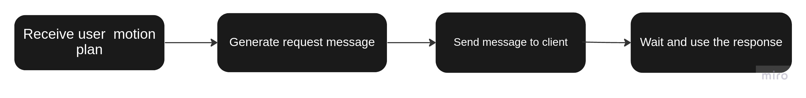

Bot Chocolate - Robotic Hot Chocolate Maker

Overview
This project was completed with group members James Oubre,
Shantao Cao, David Dorf, and Nick Marks as part of the Embedded Systems in Robotics class at Northwestern University.
For this project, a Franka Emika Panda robotic arm was used to autonomously make hot chocolate. To perceive the environment, the system utilizes an Intel D435i camera and AprilTags. Upon initial setup, a calibration process must be completed to intialize the robot's
end-effector frame to the other object frames in the scene. After this, the process consisted of using AprilTags to locate a scoop of cocoa, a mug, a spoon, and a kettle
relative to the robot. Next, using our custom MoveIt API for Python called 'movebot', the robot is able to perform path planning between all of these objects. It turns on the kettle, dumps
the cocoa powder into the mug, pours the hot water over the power, and stirs the mixture with a popsticle stick or spoon.
Here is the Franka arm following the entire motion plan (at 1.5x speed):
MoveIt and ROS2 API
My main role in this project was to integrate the MoveIt robot manipulation package and ROS2 Humble into a Python API for motion and path planning. The MoveIt package includes many actions and services for motion planning and robot control. The API itself was created as a ROS2 node that contains the corresponding action and service clients. By doing so, the API can interact with the robot through the MoveIt actions and services.
The biggest hurdle in integrating the MoveIt package into a ROS2 node was getting the action and service requests to be sent correctly such that a proper response was generated. As a result, a large part of the API involves helper functions that fill in the request or goal messages that are sent to the action and service clients. The general workflow of the motion planning API is as follows:

The API also includes custom ROS2 messages and services that I created to make certain MoveIt service request messages easier to populate, and for calling the actions and services without the need for the terminal.
Using the API
Since there is much happening in the backend with all the action and service calls, one of the custom services and messages was created explcitly to make user input as simple as possible. This service allows the user to generate motion plans by inputting start and goal poses in either Cartesian coordinates or joint angles. It also allows the user to choose whether they would want to 'plan' or 'plan and execute' their trajectory.
For this project, we created another node that contained the entire motion plan for the Franka to make hot chocolate. This node used the movebot Python API services to interact with Moveit and the Franka arm, and it functioned as the main hub for all the motion plan testing. After the entire motion plan was assembled and tested seperately, I created a service that would signal the Franka arm to begin moving according to the motion plan.
With our API, the Franka arm was able to successfully make cups of hot chocolate autonomously. Once it finished creating one cup, it was able serve up another one with no issue or need for restarting any nodes or programs.